Keseimbangan
Islam yang syumul, difahami dengan tenang dan seimbang.
Semuanya bermula dengan apa yang ada di dalam jiwa. Jika baik imannya, maka baiklah amalannya.
IKRAM membantu individu yang mencari tujuan hidup dan kefahaman Islam yang syumul, dengan pendekatan wasatiyyah dan sebuah komuniti yang menyokong.
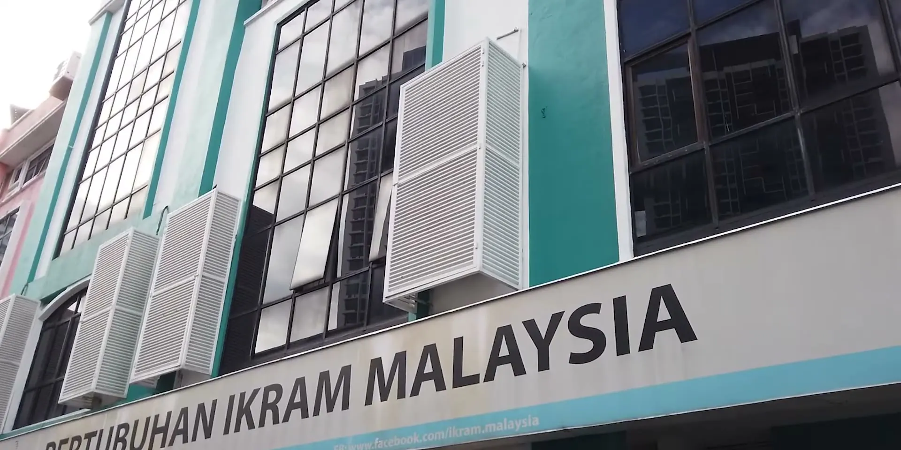
Islam yang syumul, difahami dengan tenang dan seimbang.
Masyarakat yang adil dan saksama, dibina atas nilai yang dipegang bersama.
Etika dan moral yang tinggi dalam setiap amalan.
Jika baik imannya, maka baiklah amalannya. Melalui usrah dan daurah, setiap ahli menguatkan kerohanian, ilmu dan kepimpinan diri.
Keluarga adalah institusi yang berasaskan iman, tanggungjawab dan kasih sayang. Program pembangunan diri dan keluarga menyediakan bekal untuk setiap peranan di rumah.
Dengan nilai dan amalan yang menjadi kekuatan komuniti rahmah, ahli terlibat dalam projek kemasyarakatan dan kebajikan untuk berkhidmat kepada masyarakat.
Menjadi ejen perubahan, menyumbang kepada pembaharuan dan keadilan sosial, dan bersama membentuk negara yang rahmah demi mencapai reda Allah SWT.
Bersama IKRAM Membina Negara: siapa IKRAM, apa yang diperjuangkan dan ke mana arahnya, dalam 3 minit 37 saat.
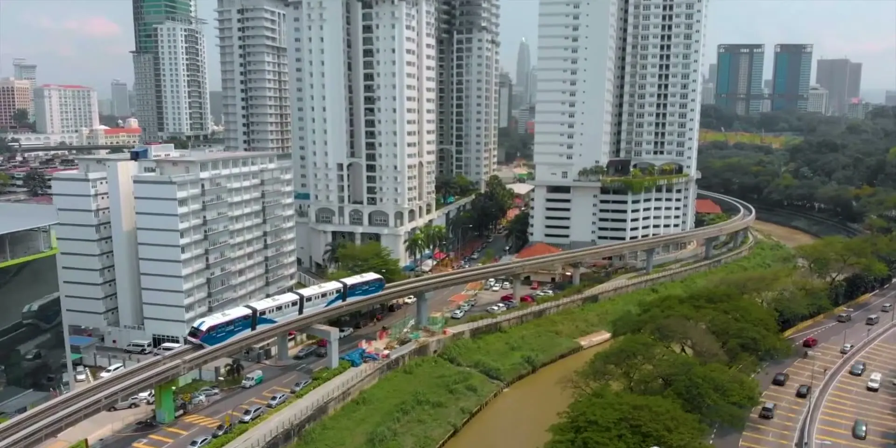
Ramai yang mencari makna, namun berdepan dengan tiga kesukaran yang sama.
Sukar memperoleh pengetahuan tentang Islam yang sebenar, sehingga membawa kepada salah faham.
Rasa sunyi, tiada hubungan yang berlandaskan nilai Islam, dan tiada peluang bertemu insan yang sehaluan.
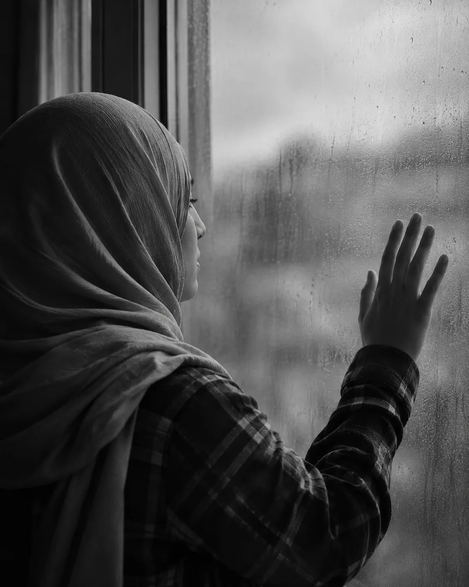
Tiada sesiapa untuk memberi bantuan dan panduan ketika berdepan masalah peribadi.
Sejak 22 Oktober 2009, IKRAM hadir di setiap negeri: 15 pejabat, 118 cawangan dan ahli di 27 negara. Pilih negeri untuk melihat pejabat terdekat.
Dua sayap, satu tujuan: anak muda dan wanita yang menyerlahkan potensi diri untuk masyarakat.
IKRAM menyokong anak muda yang mencari kefahaman dan tujuan hidup, dengan ilmu dan persekitaran yang baik, agar mereka mencapai potensi diri sebenar sebagai seorang Muslim.
Abdullah Zubayr Mohd AizainiKetua IKRAM Muda
Kefahaman agama yang sempit atau ekstrem boleh menyebabkan salah faham. IKRAM menjadi platform pertemuan dan dialog antara pelbagai agama dan budaya, untuk persefahaman dan perpaduan.
Prof. Dr Norhasmah SulaimanKetua Wanita IKRAM
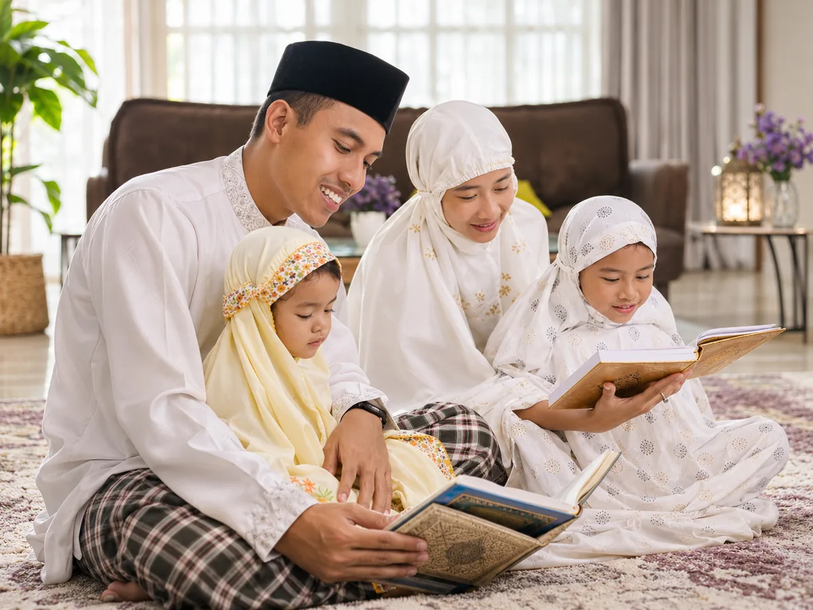
Program usrah dan daurah yang meningkatkan pengetahuan agama, menguatkan kerohanian dan kepimpinan.
Terlibat dalam projek kemasyarakatan dan kebajikan, berkhidmat kepada masyarakat demi membangunkan negara.
Membawa kesedaran sosial dan politik, menyumbang kepada pembaharuan dan keadilan sosial.
Hanya beberapa minit, dalam talian.
Klik pautan pengesahan yang dihantar ke emel anda.
Cawangan terdekat akan menghubungi anda.
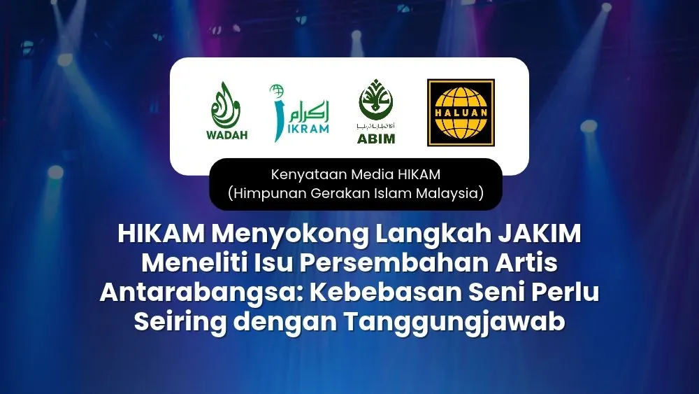
Kebebasan seni perlu seiring dengan tanggungjawab. HIKAM menyokong langkah JAKIM mendapatkan pengesahan dan meneliti dakwaan berkaitan prop pentas yang mencetuskan kontroversi di Stadium Nasional Bukit Jalil.
Admin IKRAM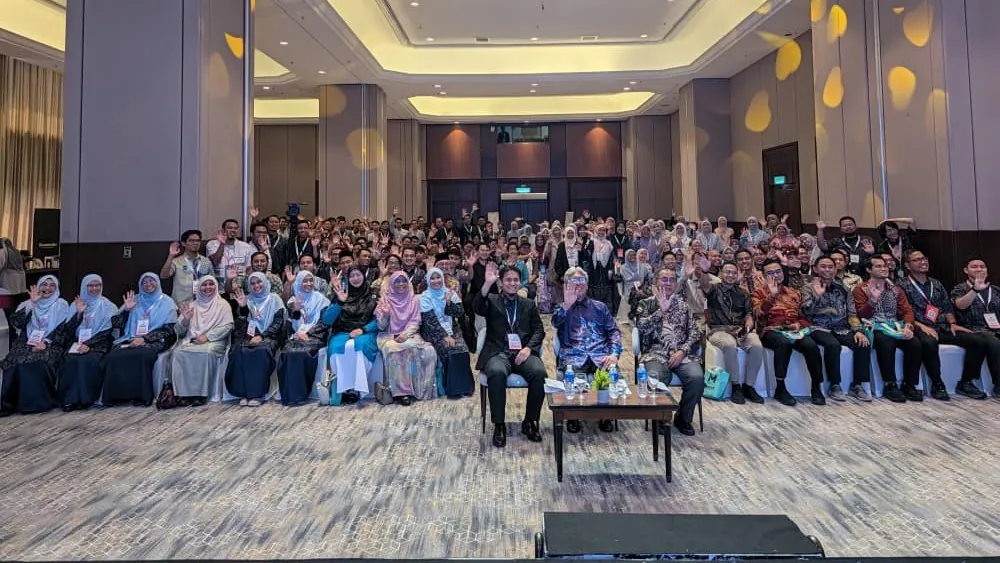
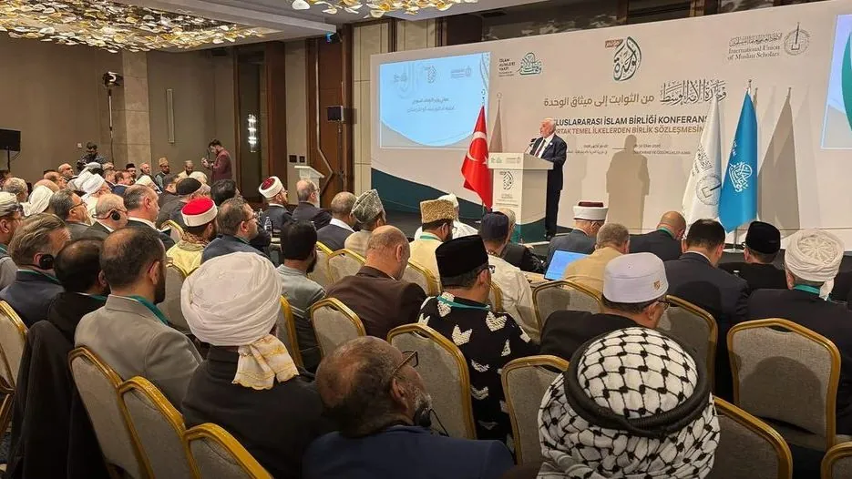
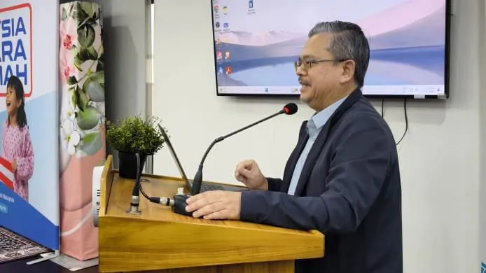
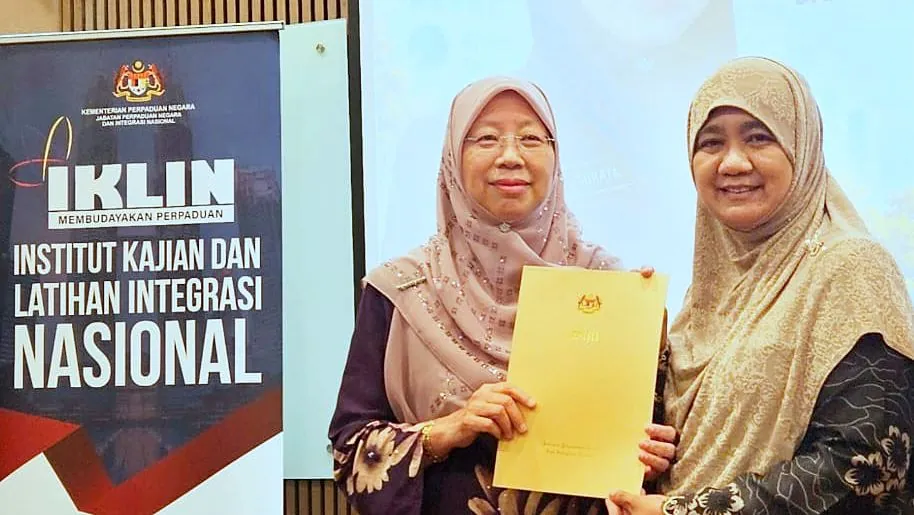
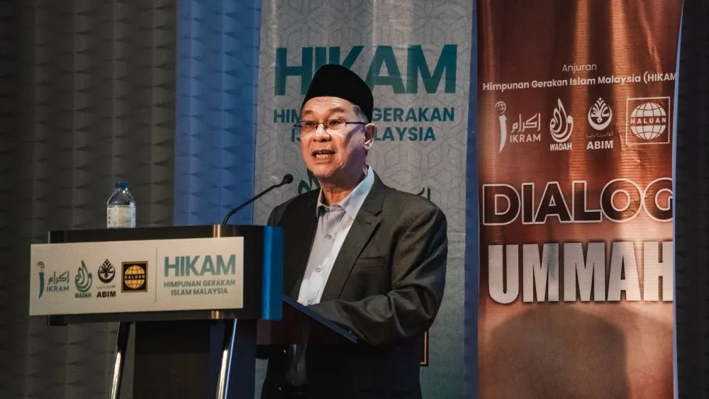
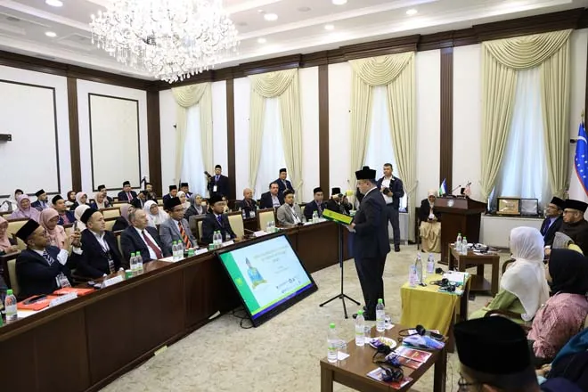
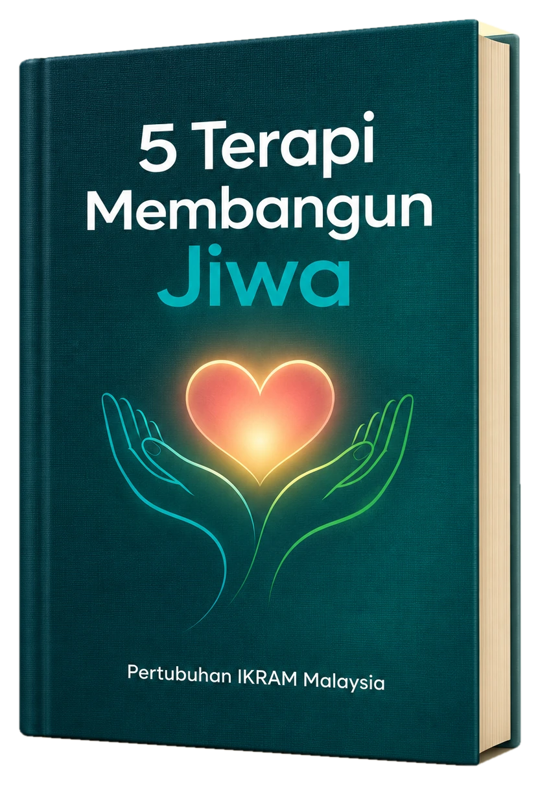
Bebaskan diri daripada keresahan dan kegelisahan. Buku ini membimbing anda kepada ketenangan dan kesejahteraan jiwa yang abadi.
Ayuh bersama meningkatkan pengetahuan diri dan komuniti untuk mencari makna Islam yang sebenar.